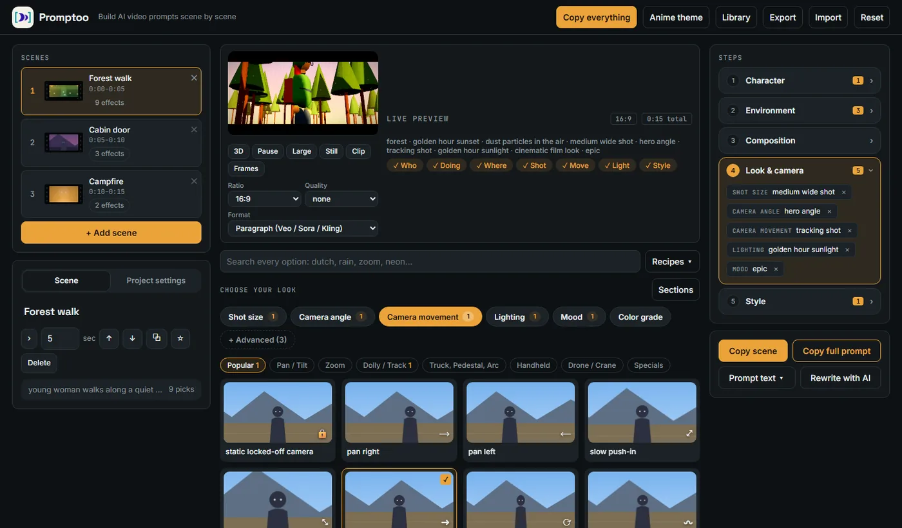
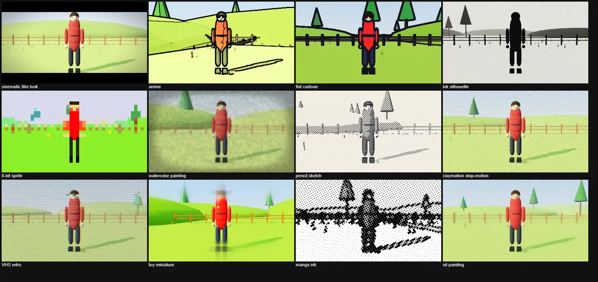
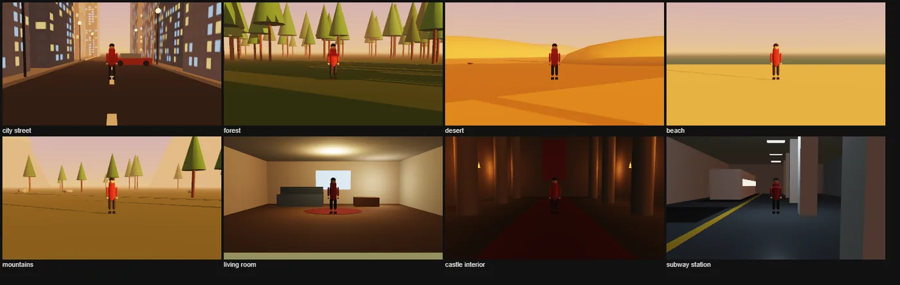

The free AI video and image prompt builder
Promptoo helps you write detailed, consistent prompts for AI video generators like Google Veo, OpenAI Sora, Kling and Runway, and for AI image tools. Pick what you want, see it in a live 3D preview, and copy the finished prompt.
- 300+ options with previews
- Live 3D camera preview
- Checks your prompt for conflicts

What is Promptoo?
Promptoo is a free prompt builder for AI video and image generators. Instead of guessing words, you choose the shot size, camera angle, camera movement, lens, lighting, mood and visual style from picture cards. Promptoo turns your choices into a clear prompt, one scene at a time.
A built-in checker tells you when two choices fight each other, for example a locked-off camera together with an orbit, so you fix problems before you spend generation credits.
| Price | Free for personal use |
|---|---|
| Account | Not needed |
| Output | Plain-text prompts you paste into any AI tool |
| Options | 10 shot sizes, 21 angles, 45 camera moves, 10 lenses, 15 lighting setups, 39 locations, 46 visual styles and more |
| Preview | Live 3D stage with camera movement, lenses, light, weather and styles |
| Your data | Stays in your browser |
| Made by | Avan Labs |
Everything you need to plan a shot before you generate it
Live 3D preview
See the camera move, the lens, the light and the style on a simple 3D stage. Watch a dolly zoom, an orbit or a crane move before you write a word.
300+ options with pictures
Shot sizes, 21 camera angles, 45 camera moves, lenses, lighting, weather, locations and styles. Every option shows what it looks like and when to use it.
A checker that explains
Conflicting picks turn red or amber and tell you why. Click a fix and move on. It catches contradictions and vague words that models ignore.
Scene by scene
Build a whole video as separate scenes with durations. Copy one scene or the full prompt. Keep the same look across scenes with one click.
Characters and templates
Describe a character once, star the details the video must not miss, and reuse them. Save scenes and projects to your own library.
Recipes
Start from a proven combination such as a luxury product reveal, a tense chase or a quiet dialogue, then change what you like.
Rewrite with AI (optional)
Use your own API key with Anthropic, OpenRouter, Groq, Gemini, a local model or any OpenAI-compatible service to polish the wording. Your key stays in your browser.
Private by design
No account, no server for your projects. Everything is saved in your browser and you can export it as a file.
Add your own effects
Add your own camera moves, lights, particles and looks with a few lines of JSON, or write a plug-in for the 3D stage.
From idea to prompt in four steps
- Describe the sceneWho or what, doing what, where. Or pick a saved character.
- Pick the lookShot, angle, camera move, lens, light, mood, style. Each card shows a preview.
- Check itWatch the 3D preview. Read the warnings. Fix conflicts with one click.
- Copy the promptCopy one scene or the whole video and paste it into your AI tool.
46 visual styles and 39 places, drawn live
From cinematic film and anime to pixel art, watercolor and claymation. From a city street at night to a moon surface, a church or a subway station. The 3D preview applies each style with real post-processing so you see the look before you commit.
- Camera: shot size, angle, 45 moves from dolly in to crash zoom to Snorricam
- Light: golden hour, neon, candlelight, Rembrandt, rim light, god rays
- World: time of day, weather, seasons, particles, eras, crowds


Made for video, useful for images too
Promptoo was built for scene-by-scene AI video, but most of the choices also describe a still image: shot size, camera angle, lens, lighting, mood, color grade, style and location. For images, skip the camera movement and copy the scene prompt.
Promptoo writes plain text, so you can use the result with any text-to-video or text-to-image tool, including Google Veo, OpenAI Sora, Kling, Runway, Luma, Pika and Midjourney. Promptoo is not affiliated with these companies.
If you prompt AI video or images, Promptoo saves you time
AI video creators
Stop re-writing the same camera and lighting words. Pick them once and keep the look consistent across scenes.
Filmmakers and storytellers
Plan shots with a real shot size, angle and lens vocabulary, and see the framing before you generate.
Marketers and designers
Build product reveals, ads and social clips from recipes, and keep every scene on brand.
Learners
Every option has a one-line explanation, so you learn cinematography terms while you build.
Frequently asked questions
What is Promptoo?
Promptoo is a free, browser-based prompt builder for AI video and image generators. You pick shot size, camera angle, camera movement, lens, lighting, style and location, see them in a live 3D preview, and copy a finished prompt.
Is Promptoo free?
Yes. Promptoo is free for personal use and needs no account. If you want to use it commercially, please ask for permission.
Which AI tools can I use the prompts with?
Promptoo writes plain-text prompts, so you can paste them into any text-to-video or text-to-image tool, such as Google Veo, OpenAI Sora, Kling, Runway, Luma, Pika or Midjourney. Promptoo is not affiliated with these companies.
Can I use Promptoo for AI image prompts?
Yes. Shot size, camera angle, lens, lighting, mood, color grade, style and location all work for still images. Skip the camera movement options and copy the scene prompt.
Does Promptoo generate videos or images?
No. Promptoo writes the prompt. The 3D preview is a planning aid that shows framing, camera movement and light with simple stand-in shapes. The final result depends on the AI tool you use, so expect it to differ.
How do I write a good AI video prompt?
Describe the subject, what it does, and where. Then add the camera (shot size, angle, movement), the lighting and the visual style. Keep each scene to one main action, avoid contradictions, and avoid vague words like "cinematic shot". Promptoo builds this structure for you and checks it.
Where is my data stored?
In your browser only. Promptoo has no accounts and no server for your projects. You can export a project as a file and import it later. See the privacy policy.
What is "Rewrite with AI"?
An optional button that sends your prompt to an AI provider you choose, using your own API key, and returns a polished version. Your key stays in your browser. You can ignore it and use Promptoo without any AI service.
Can I use Promptoo commercially?
Commercial use needs permission from Avan Labs. Tell us how you plan to use it on the contact page. See the terms of use.
Can I add my own camera moves, lights or styles?
Yes. Add your own styles in the Style tab, or add effects with a few lines of JSON in Project settings. Developers can write plug-ins for the 3D stage.
Build your first prompt in five minutes
No signup. No install. Open Promptoo, describe a scene, pick the look, copy the prompt.
Start building prompts